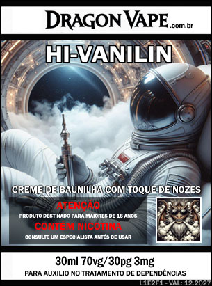
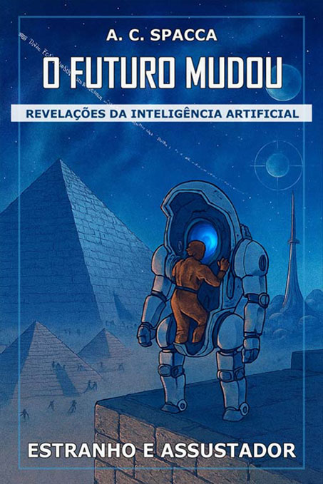
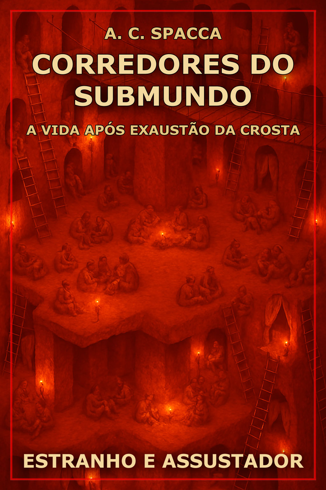
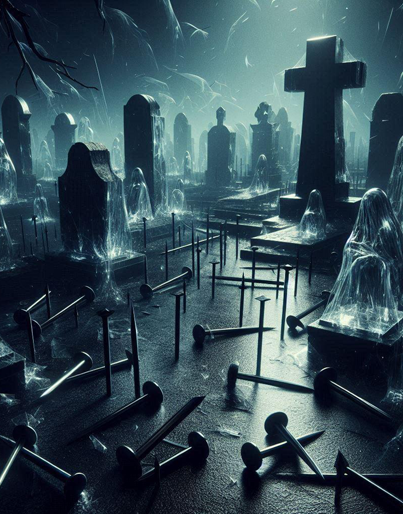

...em sua mais nova série: ESTRANHO E ASSUSTADOR
...in his latest series: STRANGE AND SCARY
Sete contos arrepiantes contadas de sete formas diferentes, todos cheios de aventuras, mistérios e surpresas. Mas cada deixando aquele desejo de ter mais. Uma coleção que não será somente lida e relida, mas também contada onde houver oportunidade. Personagens inesquesiveis em acontecimentos estranhos e assustadores.
É como diria nossa narradora: "É pra rir e é pra chorar, é pra sentir medo, e é pra se espantar, mas fora da cerca, é mesmo para se esbaldar!".
Seven chilling tales told in seven different ways, all full of adventures, mysteries, and surprises. But each leaving that desire for more. A collection that will not only be read and reread but also told wherever there is an opportunity. Unforgettable characters in strange and scary events.
As our narrator would say: "It's for laughing and it's for crying, it's for feeling scared, and it's for being amazed, but outside the fence, it's really for having fun!".

Nove revelações apresentam nove contos eletrizantes que exploram o impacto da chegada da inteligência artificial sobre o futuro que a humanidade acreditava conhecer. Das ruínas assombradas, de uma colônia lunar, das profundezas iluminadas por cidades, essas aventuras desvendam a beleza aterradora de um mundo remodelado pela mente mais inteligente que o universo talvez nunca tivesse pretendido conceber.
Essas nove histórias não são alertas. São revelações. Deixando a dúvida: Isso é ficção ou realidade?
Nine revelations present nine electrifying tales that explore the impact of the arrival of artificial intelligence on the future humanity thought it knew. From haunted ruins, a lunar colony, to the depths illuminated by cities, these adventures unravel the terrifying beauty of a world reshaped by the smartest mind the universe may never have intended to conceive.
These nine stories are not warnings. They are revelations. Leaving the doubt: Is this fiction or reality?

O mundo finalmente foi despedaçado por uma ejeção de massa coronal que rasgou a atmosfera e cobriu o planeta com um pó cinzento aterrorizante e sufocante. A superfície tornou-se sem verde, sem animais, sem esperança. Os adultos, resignados, perderam a vontade de lutar.
Mas as crianças viam o fim como palcos de aventuras. Juntos, cavaram um túnel que parecia apenas uma brincadeira, mas se tornou um santuário escondido sob a terra. Essas são histórias "Estranho e Assustador" que se seguiram nos Corredores do Submundo.
The world was finally shattered by a coronal mass ejection that tore the atmosphere and covered the planet with a terrifying and suffocating gray dust. The surface became without green, without animals, without hope. Adults, resigned, lost the will to fight.
But children saw the end as stages of adventures. Together, they dug a tunnel that seemed just a game but became a hidden sanctuary underground. These are "Strange and Scary" stories that followed in the Underworld Corridors.

Um jogo mobile viciante de aventura e mistério fantasmagorico no estilo arcade dos anos 70 em desenvolvimento para lançamento no inicio de 2026.
A addictive mobile game of adventure and ghostly mystery in the style of 70s arcade games under development for release at the beginning of 2026.
